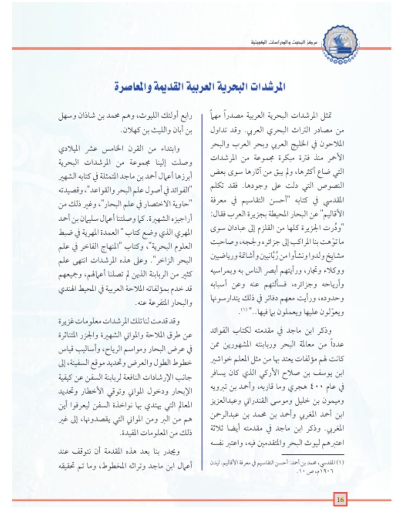
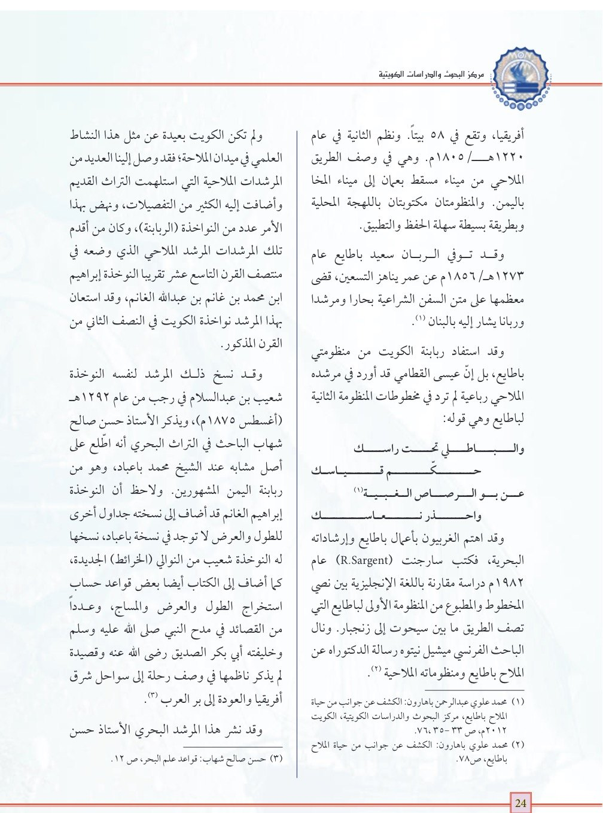
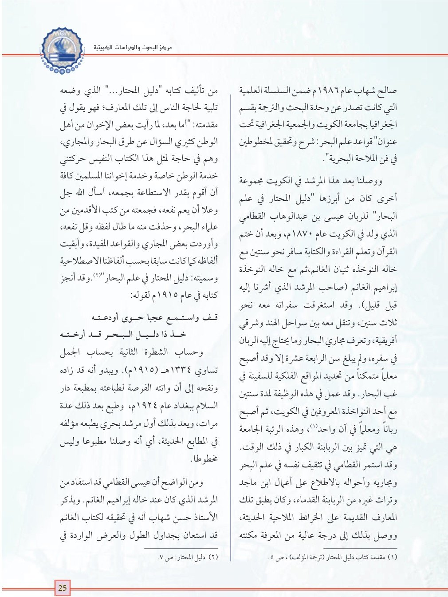

April 2017 · Magazine pages, Risalat Al-Kuwait, issue 58, Rabi' Al-Awwal 1438 AH (April 2017), Center for Research and Kuwaiti Studies, «Al-Murshidat Al-Bahriya Al-Arabiya Al-Qadima wal-Mu'asira», pages 16 and 24 to 26
Arab sea guides old and new: Eissa Al-Qatami’s Dalil Al-Muhtar
What it is
A survey of Arab sea guides. Page 24 notes that Eissa Al-Qatami quoted in his guide a quatrain of Bataye’ that is not in the manuscripts of Bataye’s poem. Page 25 gives his life: born in Kuwait in 1870, after finishing the Quran and learning to read and write he sailed about two years with his uncle Nakhuda Thunayan Al-Ghanim and about three with his uncle Nakhuda Ibrahim Al-Ghanim, between India and East Africa; he served two years as mu'allim, the navigator who fixes the ship’s position by the stars, with a well known nakhuda, then became nakhuda and mu'allim at once, «the rank that set the great captains apart». He completed Dalil Al-Muhtar in 1334 AH (1915), as the date in its verse shows, and printed it at the Dar Al-Salam press in Baghdad in 1924, making it the first sea guide printed by its own author. Page 26 notes that Hassan Saleh Shehab used Al-Qatami’s tables of latitude and longitude to complete Al-Ghanim’s guide, and that many guides followed «Al-Qatami’s Dalil».
Why it matters
The Center for Research and Kuwaiti Studies on Eissa’s training, his rank, and the dates of writing and first printing Dalil Al-Muhtar.
Page copies





Others named
Sources
Risalat Al-Kuwait, issue 58, Rabi' Al-Awwal 1438 AH (April 2017), Center for Research and Kuwaiti Studies, pages 16 and 24 to 26
How this text was made: The article opens on page 16 with no author’s name. The issue date is as printed in the page footer, though Rabi' Al-Awwal 1438 AH fell in December 2016. Pages 17 to 23 and 27 to 30 do not name the family and are not included.
Open in the interactive site